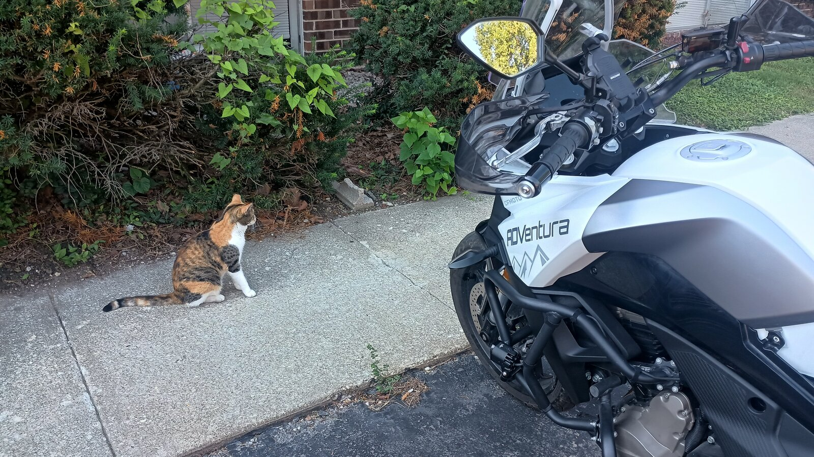
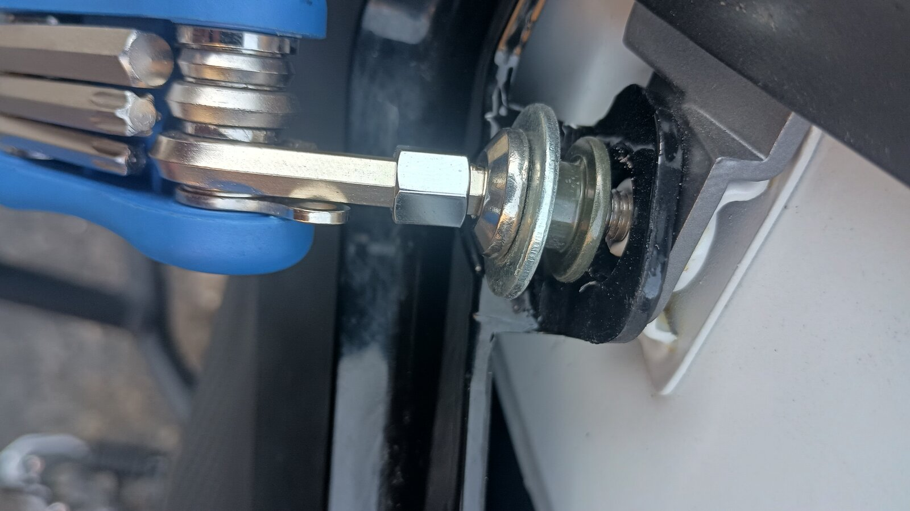
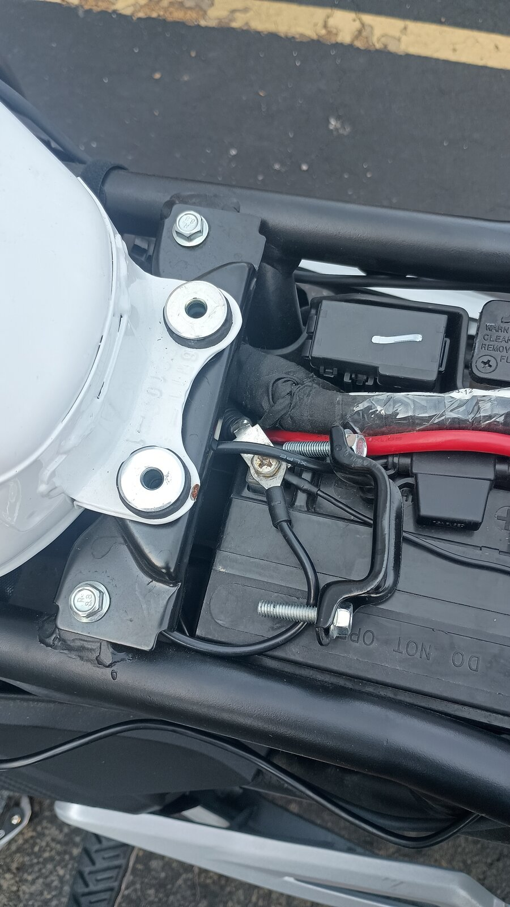
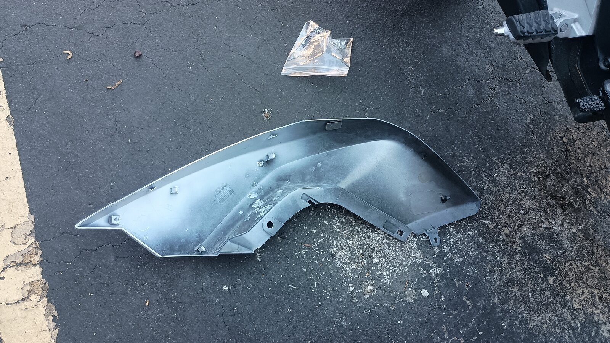
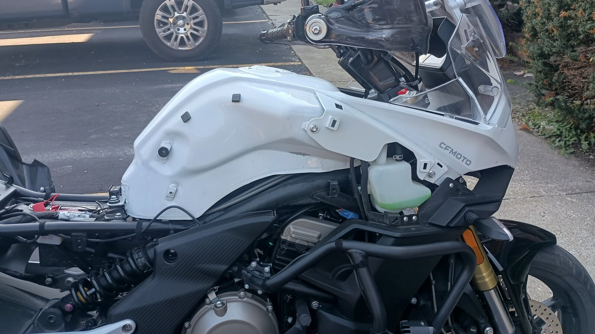
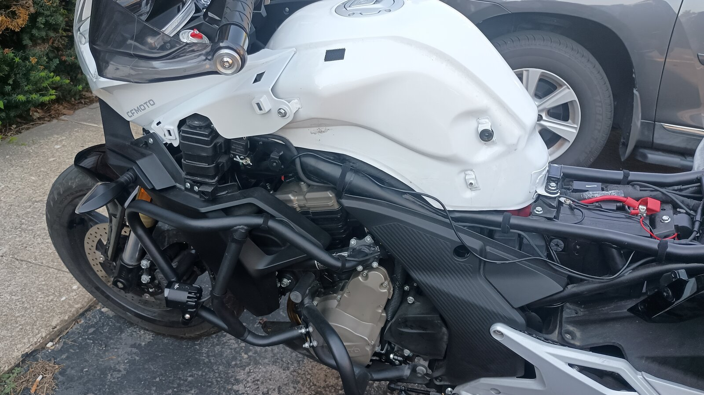
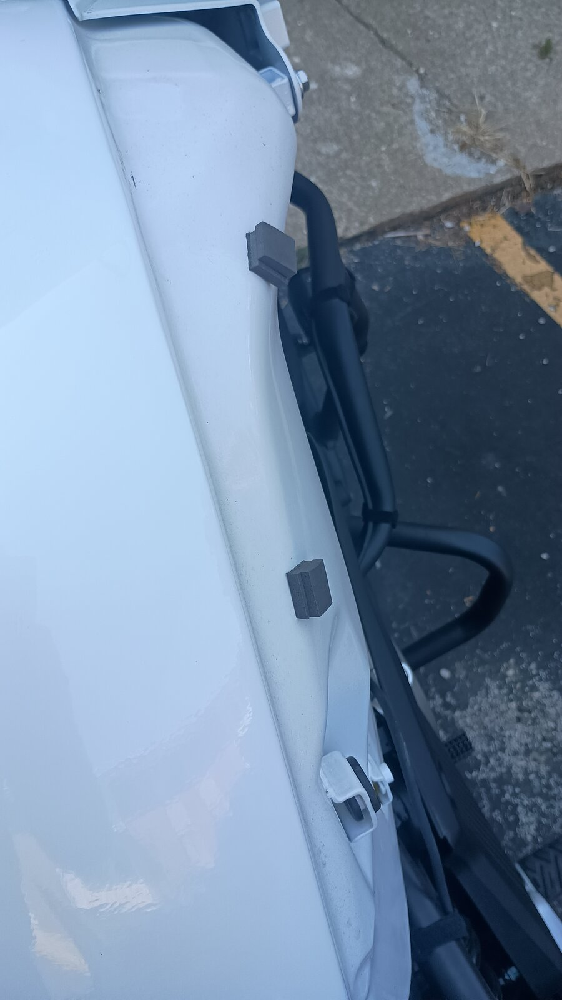

CFMoto 650 Adventura — 3,000-Mile Top-End Service
Tank off, new air filter, airbox cleaned, throttle bodies inspected, and the stock plugs swapped for NGK iridiums. Written from the photos of a 2022 model, step by step.

Tools
- Hex keys / hex bits (a multi-tool works for the shroud bolts)
- Metric sockets and ratchet
- Phillips screwdriver (airbox lid and base)
- 16 mm thin-wall spark plug socket with a universal joint or swivel
- Torque wrench (small range, in N·m)
- Pliers for spring hose clamps
- Clean rags, zip-lock bags, masking tape and a marker
- Throttle body cleaner (optional)
Parts and specs
| Spark plugs (×2) | NGK CR8EIX iridium |
|---|---|
| Stock plug removed | Torch CR8EI-series |
| Plug gap | 0.7–0.8 mm (per the engine sticker; confirm in your manual) |
| Plug torque | About 10–12 N·m (7–9 lb·ft) for a 10 mm plug |
| Air filter | OEM panel filter (airbox marked 0700-111000) |
Specs are typical values; your service manual has the final word.
Before you start. Work on a cold engine, outdoors or in a well-ventilated space, with no flames or sparks nearby. You'll be disconnecting a fuel line, so running the tank low beforehand makes the tank lighter and reduces spillage.
1. Remove the seat and disconnect the battery
- Remove the rider and passenger seats to expose the battery and the rear of the tank.
- Disconnect the negative (−) terminal first, then tuck the cable away so it can't touch the post.
- You can leave the positive terminal connected, but cover it with its red boot.


2. Remove the tank shrouds
- Remove the hex bolts holding each silver side shroud. Each bolt passes through a rubber grommet with a metal collar and washers; keep that stack together in the order it came out.
- Work the shroud free of its clips gently. The inside tabs break easily if you pull straight out, so ease each one off.
- Bag and label the hardware for each side.




The grey foam blocks stuck to the tank are anti-rattle pads for the shrouds. Leave them in place, and replace any that fall off, or the shrouds